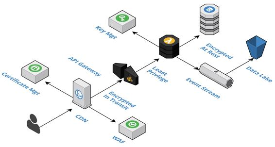

Defense in depth
Security and redundancy go hand in hand. Each layer of the system architecture has its own fortification. This redundancy ensures that if an outer layer is breached, then the next layer can potentially thwart the attack or at least slow it down long enough for the initial breach to be repaired. The number of layers in our cloud-native components is purposefully shallow. All inter-component communication is performed asynchronously via event streaming and all synchronous intra-component communication is with highly available, value-added cloud services, such as cloud-native databases. Our boundary components, such as a BFF component, have the most layers with an edge layer, a component layer, and a data layer; whereas fully asynchronous components will not have an edge layer, because they are entirely internal. The following diagram summarizes the topics we will discuss at the different layers:
